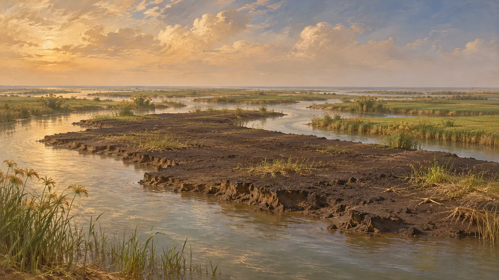
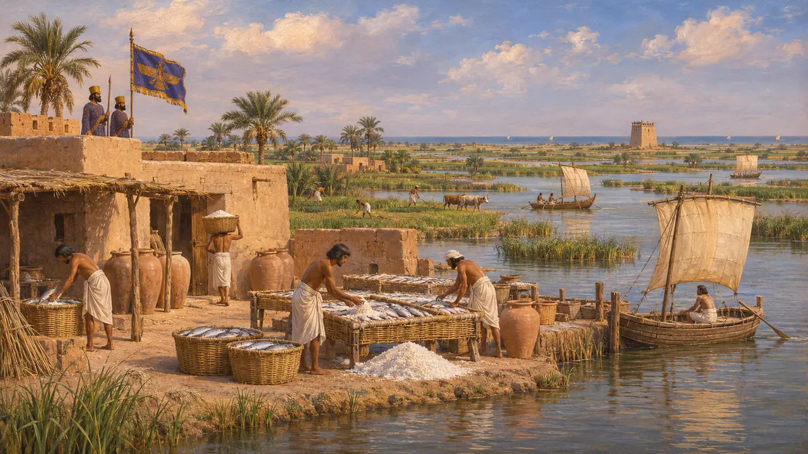
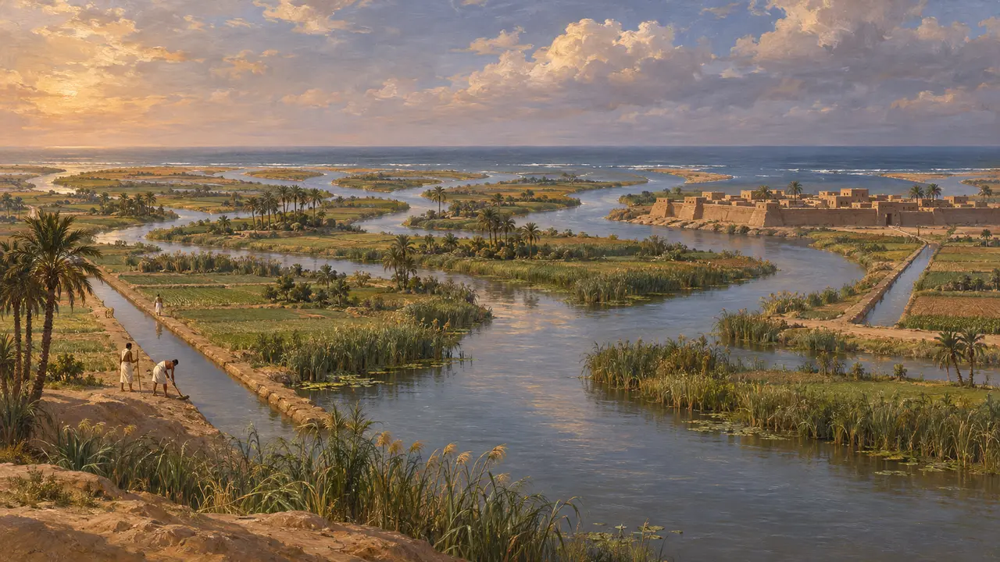
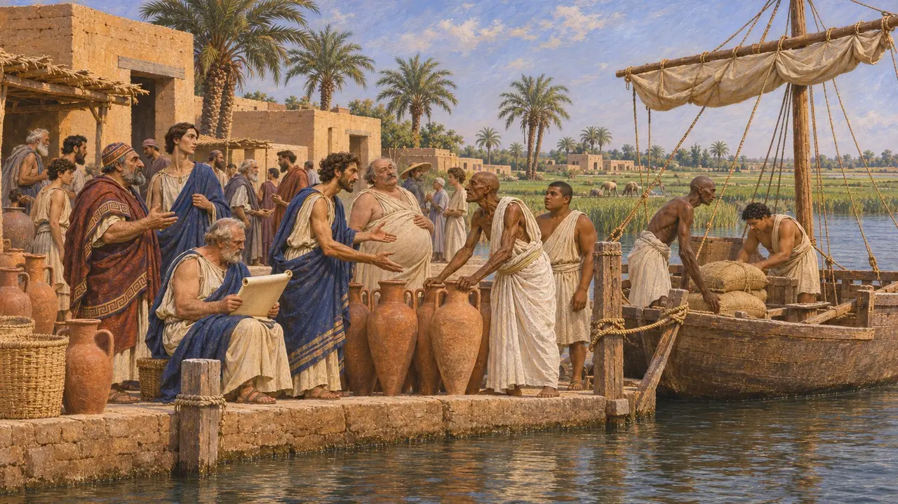

尼罗河三角洲
埃及北部尼罗河诸河口的低地，自公元前525年起属波斯
三角洲是尼罗河入海前分成数条支流的宽阔低平的三角形地带。其城镇包括塞易斯、瑙克拉提斯和佩鲁西昂。冈比西斯于公元前525年从其东缘进入埃及；亲眼见过它的希罗多德称埃及为河流的馈赠。
游戏中： 三角洲东缘就是佩鲁西昂战场，也是进入孟菲斯关卡的道路；它的淤泥、河口和城镇出现在该关卡的文字与闲谈中。

河流的馈赠
古代记述希罗多德说，希腊人航行前往的那部分埃及是河流冲积而成的土地，是河流的馈赠。他说海岸长六十斯科伊诺斯，从普林提涅湾到塞尔波尼斯湖，并描述那里的土地平坦、多水，由黑色松软的泥土构成。
Herodotus 2.5-6, 2.12

伊奥尼亚人眼中的埃及
古代记述希罗多德转述伊奥尼亚人的看法：只有三角洲才是埃及，从珀耳修斯瞭望塔到佩鲁西昂的腌鱼场。他不同意：他说，埃及是埃及人居住的全部土地，从埃勒凡提尼直到海边。
Herodotus 2.15-17

七个河口
古代记述希罗多德列举尼罗河的河口：东边的佩鲁西昂河口，西边的卡诺珀斯河口，二者之间有塞本尼图斯、塞易斯、门德斯、博尔比提涅和布科利科斯河口，后两者为人工开凿。佩鲁西昂扼守东河口，冈比西斯的军队在那里与普萨美提克的军队交战。
Herodotus 2.17, 3.10-11

塞易斯王朝
见于史载波斯人到来之前最后一个本土王朝定都于三角洲西部的塞易斯，阿玛西斯把瑙克拉提斯给希腊人作为贸易城。塞易斯、瑙克拉提斯和代芬内丘的发掘揭示了公元前六世纪三角洲的希腊与卡里亚移民。
Excavations at Naucratis and Sais; Herodotus 2.154, 2.178
来源
- Herodotus 2.5-17, 2.154, 2.178, 3.10-11
- A. B. Lloyd, Herodotus Book II, 1975-1988